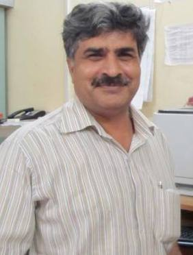

Dr. Y. C. Sharma

About Me
Will be updated soon...
Recent Publications
Research Publications Overall: 148
Publications in the last five years: 61
Publications in the last five years: 61
- Shikha Dubey, Uma, Lavanchawee Sujarittanonta, Yogesh Chandra Sharma, Preparation and properties of hydrous bismuth oxides for nitrate removal from aqueous solutions, Desalination and Water Treatment, doi: 10.1080/19443994.2013.846552
- Deepak Gusain, Faizal Bux, Yogesh Chandra Sharma, "Abatement of chromium by adsorption on nano crystalline zirconia using response surface methodology, Journal of Molecular Liquids, MOLLIQ-D-14-00230 (28.04.2014)(In press)
- Arun Lal Srivastav, Prabhat Kumar Singh, Chih Huang Weng, Yogesh Chandra Sharma, A novel adsorbent, hydrous bismuth oxide for the removal of nitrate from aqueous solutions, JOURNAL OF HAZARDOUS, TOXIC, AND RADIOACTIVE WASTE, MS HZENG-324R1(In press).
- Deepak Gusain, Yogesh Chandra Sharma. "Assistance of coefficient of determination to sum of normalized error in determining the suitable isotherm and kinetic model of adsorption of Orange-G on nano zirconia, RSC Advances (In press).
- Deepak Gusain, Varsha Srivastava, Vinay K Singh, Y.C. Sharma, Crystallite size and phase transition demeanor of ceramic steel, Materials Chemistry and Physics (10.01.2013)(08.02.2014).
- Subhransu Sahoo, Uma, Sushmita Banerjee, Yogesh C. Sharma, Application of natural (unmodified) clay as a potential adsorbent for the removal of a toxic dye (methylene blue) from aqueous solutions, Desalination and Water Treatment, DOI: 10.1080/19443994.2013.816872.
- Deepak Gusain, Varsha Srivastava, Yogesh Chandra Sharma, Kinetic and thermodynamic studies on the removal of Cu(II) ions from aqueous solutions by adsorption on modified sand, Journal of Industrial and Engineering Chemistry, DOI: 10.1016/j.jiec.2013.06.01
- V. Srivastava, M. Shekhar, D. Gusain, F. Gode, Y.C. Sharma, Application of a heterogeneous adsorbent (HA) for the removal of hexavalent chromium from aqueous solutions: Kinetic and equilibrium modelling, Arabian J Chemistry, (2014).
- Varsha Srivastava, Yogesh Chandra Sharma, Synthesis and characterization of Fe3O4@n-SiO 2 nanoparticles from an agrowaste material and its application for the removal of Cr(VI) from aqueous solutions, Water, Air, Soil Pollution, 225(1), Article no 1776(2014).
- Sushmita Banerjee, Mahesh C. Chattopadhyaya, Uma, Yogesh Chandra Sharma, Adsorption characteristics of modified wheat husk for the removal of a toxic dye, methylene blue from aqueous solutions, Journal of Hazardous, Toxic, and Radioactive Waste Management, 18,56-63(2014).
2013
- Apoorv Shankar, Y.C. Sharma, T.N. Singh, Effect of Adsorption on Degradation of the Pesticide Aldicarb in the Soil, International Reviews in Chemical Engineering (11.02.2013) (2013).
- Uma, Sushmita Banerjee, Yogesh C. Sharma, Equilibrium and kinetic studies for adsorption of malachite green from aqueous solution by low cost activated carbon, Journal of Industrial and Engineering Chemistry, 19,1099-1105(2013).
- C.H. Weng, Y.T. Lin, Y.J. Chen, Y.C. Sharma, Spent green tea leaves for decolourisation of raw textile industry wastewater, Coloration Technology, 129,298-304(2013).
- Sandeep Yadav,Varsha Srivastava, Sushmita Banerjee, Chih-Huang Weng, Yogesh C. Sharma, Adsorption characteristics of Modified Sand for the Removal of Hexavalent Chromium Ions from Aqueous Solutions: Kinetics, Thermoynamic and Equilibrium Studies, CATENA,100,120-127(2013).
- M. Mohammad, Hari T. Kandaramath, Z.Yaakob, Yogesh Chandra Sharma, K. Sopian,, Overview on the production of paraffin based-biofuels via catalytic hydrodeoxygenation (Review), Renewable and Sustainable Energy Reviews, 22,121-132 (2013).
- Sushmita Banerjee, Mahesh C. Chattopadhyaya, Varsha Srivastava, Yogesh Chandra Sharma, Adsorption studies of a cationic dye, methylene blue (C16H18N3ClS) onto activated saw dust (ACSD):kinetics, equilibrium and thermodynamic studies. Environmental Pollution and Sustainable Energy, EP-12-323(July 10,2013).
- Sandeep Yadav, Varsha Srivastava, Sushmita Banerjee, Fethiye Gode, Yogesh Chandra Sharma, Studies on the removal of nickel from aqueous solutions using modifie riverbed sand, Environmental Science and Pollution Research, 20,558-567(2013).
- Arun Lal Srivastava, Prabhat Kumar Singh, Varsha Srivastava, Yogesh Chandra Sharma, Ms. Application of a new adsorbent for the removal of fluoride from aqueous solutions, J Hazardous Materials, 263, 342-352(2013).
- Varsha Srivastava, D. Gusain,Y.C. Srivastava, Synthesis, characterization and application of zinc oxide nanoparticles (n-ZnO), Ceramics International, 39, 9803-9808(2013).
- Varsha Srivastava, Chih H. Weng, Yogesh C Sharma, Studies on Application of a thermally modified agro waste material for an economically viable removal of Cr (VI) from aqueous solutions", Journal of Hazardous, Toxic and Radioactive Waste, 17,125-133(2013).
- Varsha Srivastava, Deepak Gusain, Chih-Huang Weng, Yogesh C. Sharma, nano-Fe3O4 for the removal of Ni(II) from aqueous solution by adsorption : Kinetics and mass transfer study, J Indian Chem. Soc., 90,997-1003(2013).
- Arun L. Srivastava, Vinay K. Dubey, Prabhat K. Singh, Yogesh C. Sharma, Safe ground water: I, nitrate contamination of ground water of Varanasi, Uttar Pradesh, India, J Indian Chem. Soc., 90,983-989(2013).
Book Chapter
Books: 05
Editorial Board Member of International Professional Journals
- International Journal of Environmental Pollution and Solutions, Columbia Academic Press, USA, Editor-in-Chief, Columbia International Press
- Journal of Applied Sciences in Environmental Sanitation, International Journal' 2007, eISSN 1978-6980,Pissn0126-2807
- International Reviews in Chemical Engineering(IRECHE), Editorial Board Member, Praise Worthy Prize, London, WC2B 6AA, U.K.
- International Journal on Advanced Materials and Technologies(IREAMT), Editorial Board Member, Praise Worthy Prize, London, WC2B 6AA, U.K.
- Journal of Materials and Environmental Sciences, Editorial Board Member, ISSN: 20282508
- IIST Journal of Applied Chemistry, India, Editorial Board Member, 0976-7355
- Asian Chitin Journal, India, Editorial Board Member,(2006), 0973-3345
Chapters Published in Books: 08
Books Published: 04
Other relevant Information(h index and citations etc.)
Scopus
h-index: 25
Citations: 2081
h-index: 25
Citations: 2081
Google Scholar
h-index: 30
Citations: 3336
h-index: 30
Citations: 3336
Academic Profile
-
Academic Profile
- D.Sc. CCS University, Merrut [2010]
- Ph.D. Institute of Technology-BHU [1991]
- M.Sc.: Rohilkhand University. [1984]
-
Professional Profile
- Professor: Institute of Technology [2010 - till date]
- Associate Professor: Institute of Technology [2007 - 2010]
- Reader: Institute of Technology [2004 - 2007]
- Assistant Professor: NIFFT, Ranchi [1993 - 2004]
-
Subject Teaching
- Physical chemistry, Chemical thermodynamics, Catalysis, Adsorption Water Pollution Control, Fuels and Furnaces
Research Interests
- Renewable Energy and Bio-fuels
- Development and characterization of heterogenous catalysts for the synthesis of biodiesel
- Synthesis and application of nanoadsorbents
- Synthesis of efficient activated carbons for water remediation
- Macrophytes for Uptake of Metallic Species from industrial effluents
Awards and Honours
- To be updated...
Contact Me
- ysharma.apc@iitbhu.ac.in
- 0542 - 6702865
9935616119
0542 - 67028769 - Department of Chemistry Indian Institute of Technology (Banaras Hindu University) Varanasi - 221 005